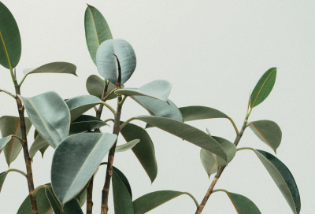

Сохранённые статьи
Грета, у вас 5 сохранённых статей
По ключевым словам: Природа, Тайга и 2 другим

2 августа, 2019
Национальное достояние – парки
В 2016 году Америка отмечала важный юбилей: сто лет назад здесь начала складываться система национальных парков – охраняемых территорий, где и сегодня каждый может приобщиться к природе.
Лента.ру
Природа

2 августа, 2019
Лесные огоньки: история одной фотографии
Фотограф отвлеклась от освещения суровой политической реальности Мексики, чтобы запечатлеть ускользающую красоту одного из местных чудес природы.
Медуза
Войдите, чтобы сохранять статьи

2 августа, 2019
«Первозданная тайга»: новый фотопроект Игоря Шпиленка
Знаменитый фотограф снимает первозданные леса России, чтобы рассказать о необходимости их сохранения. В этот раз он отправился в Двинско-Пинежскую тайгу, где...
Риа
Войдите, чтобы сохранять статьи
2 августа, 2019
Национальное достояние – парки
В 2016 году Америка отмечала важный юбилей: сто лет назад здесь начала складываться система национальных парков – охраняемых территорий, где и сегодня каждый может приобщиться к природе.
Лента.ру
2 августа, 2019
Лесные огоньки: история одной фотографии
Фотограф отвлеклась от освещения суровой политической реальности Мексики, чтобы запечатлеть ускользающую красоту одного из местных чудес природы.
Медуза
Войдите, чтобы сохранять статьи